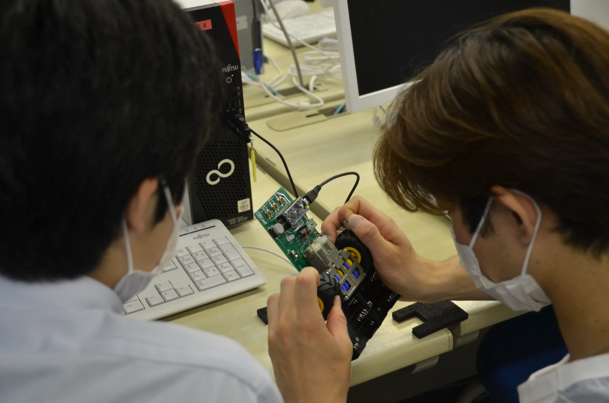
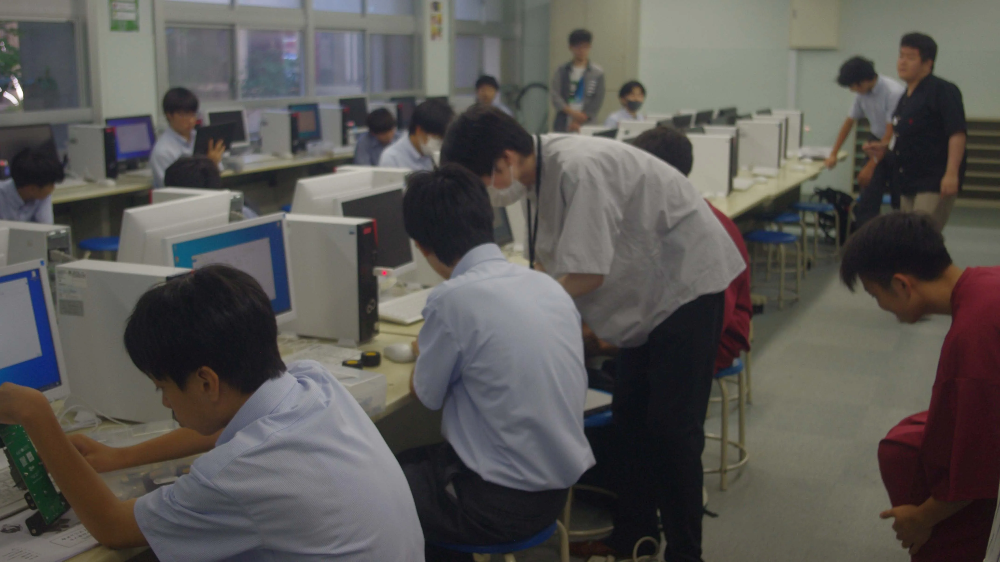
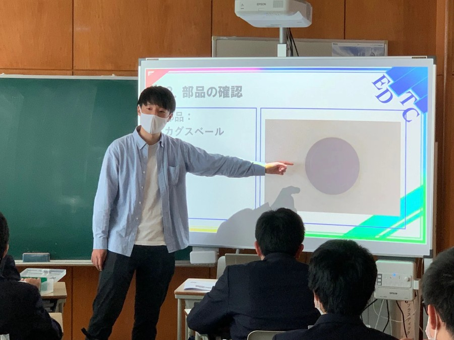
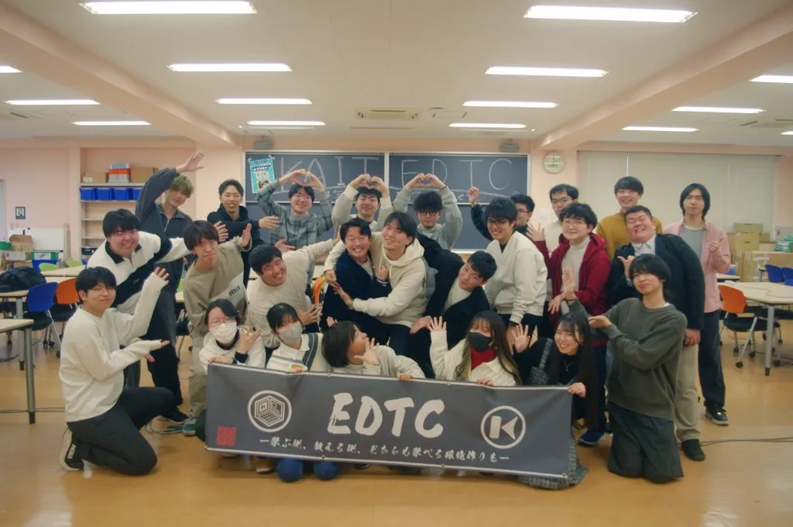

About EDTC
EDTCは神奈川工科大学に属する学生団体です。
4つの理念に基づいて活動しています。

ngineering
神奈川工科大学（KAIT）に属しており、
「工学」の知識が豊富な学生団体です。
情報系・機械系・電気系など多様な専攻を持つメンバーが集まり、 それぞれの専門知識を活かした教育活動を展開しています。

ispatch
学生ならではの「迅速な派遣」により、
より早く需要にこたえた授業展開・イベント参加を目指します。
学校や地域からのご依頼に柔軟に対応し、 子どもたちに科学の楽しさを届けています。

eacher
学生の作った教材を使った
「教える」活動を行っています。
プログラミング・ロボット・電子工作など、 様々なテーマで子どもたちの興味を引き出す授業を実施しています。

ompany
EDTC内部は企画・総務・広報・人事・営業の
5つの部署に分かれています。
「企業」のような活動体制により、 各部署で役割分担をし、より進化する団体運営を心掛けています。